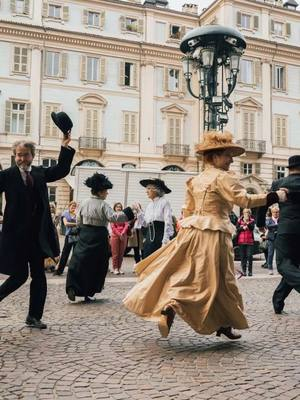
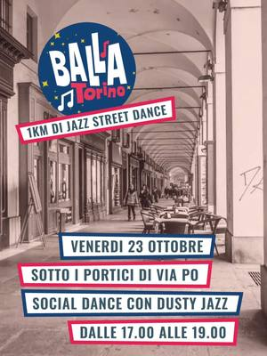
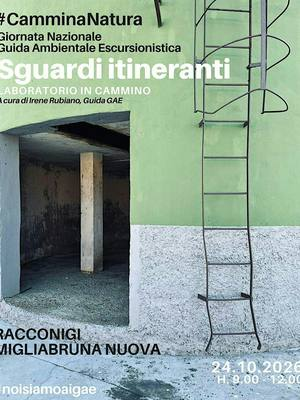
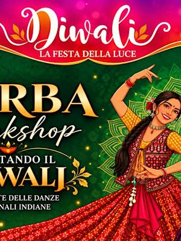
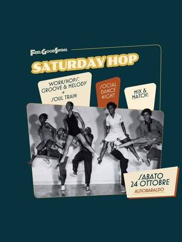
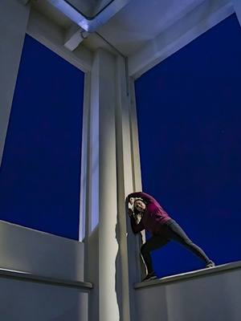
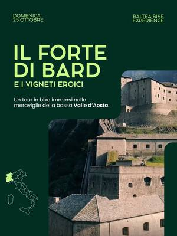
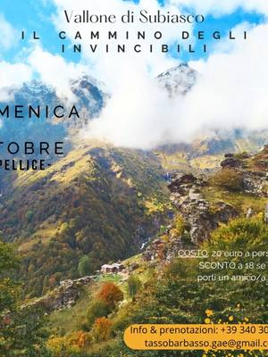
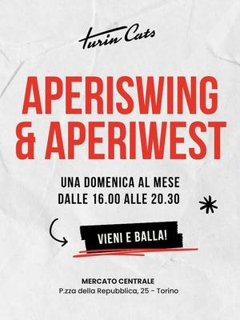

Danza e attività di movimento a Torino e dintorni
Corsi e serate di danza, social dance, escursioni, giri in bici e attività all’aperto a Torino e dintorni.
Cerca tutti i workshop39 attività in arrivo · aggiornato il 23 ottobre 2026

ven23ottMovimentoLa magia del cerchio: danza fusion al parcovenerdì 23 ottobre, 17:00–18:30San Salvario (TO) · Gratiscon Rossana Delmastro (Samar Academy) per BallaTorino
ven23ottMovimentoJazz Street Dance: si balla sotto i porticivenerdì 23 ottobre, 17:00–19:00Centro (TO) · Gratiscon Dusty Jazz con BallaTorino
sab24ottMovimentoSguardi itineranti: fotografare camminandosabato 24 ottobre, 09:00–12:00Racconigi (CN) · Gratiscon Irene Rubiano
sab24ottMovimentoGarba: danze tradizionali indianesabato 24 ottobre, 11:00–13:00Centro (TO) · Gratiscon Mio Mao Fiumi di Culture
sab24ottMovimentoSaturday Hop: lindy hop e social dancesabato 24 ottobre, 15:00Aurora (TO)con Feel Good Swing
sab24ottMovimentoDansez ensemble: danza contemporaneasabato 24 ottobre, 16:00–18:00Pozzo Strada (TO) · Gratiscon Tedacà con la Compagnie Choryphée
dom25ottMovimentoTour in bici: Forte di Bard e vignetidomenica 25 ottobreSettimo Vittone (TO)con Baltea Bike Experience
dom25ottMovimentoEscursione: il cammino degli Invincibilidomenica 25 ottobre, 08:30Luserna San Giovanni (TO) · 20 €con Tassobarbasso, guide ambientali- dom25ottMovimentoDanza indiana: laboratorio aperto per Diwalidomenica 25 ottobre, 10:30–12:00Quadrilatero (TO) · Gratiscon Dafne Carli per Unione Induista Italiana

dom25ottMovimentoAperiswing: lezione open e social dancedomenica 25 ottobre, 16:00–20:30Aurora (TO) · Gratiscon Turin Cats sab31ottMovimentoTour in bici: la Valchiusellasabato 31 ottobreValchiusella (TO)con Baltea Bike Experience
sab31ottMovimentoTour in bici: la Valchiusellasabato 31 ottobreValchiusella (TO)con Baltea Bike Experience sab31ottMovimentoIn canoa sul Po: speciale Halloweensabato 31 ottobre, 20:30–22:00Centro (TO) · da 29 € · esauritocon Somewhere Tours con Circolo Amici del Fiume
sab31ottMovimentoIn canoa sul Po: speciale Halloweensabato 31 ottobre, 20:30–22:00Centro (TO) · da 29 € · esauritocon Somewhere Tours con Circolo Amici del Fiume ven6novMovimentoMilonga Gricel: lezione e serata di tangovenerdì 6 novembre, 21:00–01:00Parella (TO) · 15 €con Proyecto Gricel
ven6novMovimentoMilonga Gricel: lezione e serata di tangovenerdì 6 novembre, 21:00–01:00Parella (TO) · 15 €con Proyecto Gricel sab7novMovimentoTrekking a Cerretto Langhe: impollinatorisabato 7 novembre, 14:30–16:30Cerretto Langhe (CN) · Gratiscon Turismo in Langa con Langa Silvatica
sab7novMovimentoTrekking a Cerretto Langhe: impollinatorisabato 7 novembre, 14:30–16:30Cerretto Langhe (CN) · Gratiscon Turismo in Langa con Langa Silvatica sab7novMovimentoStage di Garba: danza in cerchiosabato 7 novembre, 15:00–16:30Centro (TO) · 25 €con Ruthvi Deev
sab7novMovimentoStage di Garba: danza in cerchiosabato 7 novembre, 15:00–16:30Centro (TO) · 25 €con Ruthvi Deev dom8novMovimentoObiettivo foliage: foto in Val Varaitadomenica 8 novembre, 09:00–16:00Sampeyre (CN) · Gratis · esauritocon Parco del Monviso
dom8novMovimentoObiettivo foliage: foto in Val Varaitadomenica 8 novembre, 09:00–16:00Sampeyre (CN) · Gratis · esauritocon Parco del Monviso sab14novMovimentoTrekking nelle Langhe: foliage tra le vignesabato 14 novembre, 09:00Monforte d’Alba (CN) · 249 €con Hiking Taste Tour
sab14novMovimentoTrekking nelle Langhe: foliage tra le vignesabato 14 novembre, 09:00Monforte d’Alba (CN) · 249 €con Hiking Taste Tour dom15novMovimentoGita in bici: il Bosco del Merlinodomenica 15 novembre, 09:00–16:00Racconigi (CN) · Gratiscon Parco del Monviso
dom15novMovimentoGita in bici: il Bosco del Merlinodomenica 15 novembre, 09:00–16:00Racconigi (CN) · Gratiscon Parco del Monviso dom15novMovimentoPasseggiata e polenta in collinadomenica 15 novembre, 10:30–16:00San Mauro Torinese (TO) · da 22 €con Mulino Sambuy OdV
dom15novMovimentoPasseggiata e polenta in collinadomenica 15 novembre, 10:30–16:00San Mauro Torinese (TO) · da 22 €con Mulino Sambuy OdV dal21novMovimentoBaladi e folklore egiziano con Nada Al Bashada sabato 21 novembre a domenica 22 novembre, 10:00–16:00Parella (TO) · 240 €con Simona Evoli con Nada Al Basha
dal21novMovimentoBaladi e folklore egiziano con Nada Al Bashada sabato 21 novembre a domenica 22 novembre, 10:00–16:00Parella (TO) · 240 €con Simona Evoli con Nada Al Basha sab21novMovimentoFortango Extra: workshop di tangosabato 21 novembre, 15:00–20:00Aurora (TO)con Fortango con Michael «El Gato» Nadtochi ed Elvira Lambo
sab21novMovimentoFortango Extra: workshop di tangosabato 21 novembre, 15:00–20:00Aurora (TO)con Fortango con Michael «El Gato» Nadtochi ed Elvira Lambo sab21novMovimentoBlues dance: workshop con Dexter Santossabato 21 novembre, 15:30–18:30San Salvario (TO) · 60 €con Slow Town Blues con Dexter Santos
sab21novMovimentoBlues dance: workshop con Dexter Santossabato 21 novembre, 15:30–18:30San Salvario (TO) · 60 €con Slow Town Blues con Dexter Santos dal5dicMovimentoSnow Latin Week: salsa e bachatada sabato 5 dicembre a martedì 8 dicembre, 12:00–17:00Bardonecchia (TO) · da 299 €con Like This Agency
dal5dicMovimentoSnow Latin Week: salsa e bachatada sabato 5 dicembre a martedì 8 dicembre, 12:00–17:00Bardonecchia (TO) · da 299 €con Like This Agency dal22genMovimentoGricel Tango Weekend: seminario con Chichoda venerdì 22 gennaio a domenica 24 gennaio, 20:00San Donato (TO) · 200 €con Proyecto Gricel con Chicho Frumboli e Juana Sepúlveda
dal22genMovimentoGricel Tango Weekend: seminario con Chichoda venerdì 22 gennaio a domenica 24 gennaio, 20:00San Donato (TO) · 200 €con Proyecto Gricel con Chicho Frumboli e Juana Sepúlveda sab23genMovimentoSchool Days: workshop di swing e musicalitàsabato 23 gennaioTorinocon Dusty Jazz
sab23genMovimentoSchool Days: workshop di swing e musicalitàsabato 23 gennaioTorinocon Dusty Jazz- datada confermareAltroCascina Roccafranca: corsi della stagioneData da confermareMirafiori (TO)con Cascina Roccafranca
- dataa sceltaMovimentoProgetto SLIP: corsi di circo e aereaData a sceltaBarriera di Milano (TO) · da 190 € all’annocon Progetto SLIP
 datada confermareMovimentoPilates a Palazzo: lezione e colazioneData da confermareTorinocon Rita Capparelli con Futura Pilates
datada confermareMovimentoPilates a Palazzo: lezione e colazioneData da confermareTorinocon Rita Capparelli con Futura Pilates- dataa sceltaMusica e teatroSPLIT Teatro: recitazione, musical e cantoData a sceltaMirafiori (TO)con SPLIT Teatro
- dataa sceltaMovimentoStudio21: corsi di street danceData a sceltaLingotto (TO)con Studio21 Street Dance School
 ognimerMovimentoSempre in ballo: musica e piccoli passiOgni mercoledì, 09:30–10:30San Mauro Torinese (TO)con Alessandra La Dibi per upTOyou
ognimerMovimentoSempre in ballo: musica e piccoli passiOgni mercoledì, 09:30–10:30San Mauro Torinese (TO)con Alessandra La Dibi per upTOyou ognilunMovimentoIl corpo in gioco: danzamovimento inclusivaOgni lunedì, 18:30–20:00Barriera di Milano (TO)con Cascina Macondo per Bagni Pubblici
ognilunMovimentoIl corpo in gioco: danzamovimento inclusivaOgni lunedì, 18:30–20:00Barriera di Milano (TO)con Cascina Macondo per Bagni Pubblici ognigioMovimentoDanze rituali: pizzica e tarantellaOgni giovedì, 18:30–20:30Barriera di Milano (TO) · 75 € al mesecon Valentina Padovan per Bunker
ognigioMovimentoDanze rituali: pizzica e tarantellaOgni giovedì, 18:30–20:30Barriera di Milano (TO) · 75 € al mesecon Valentina Padovan per Bunker ognimarMovimentoCorso di danza africana: baseOgni martedì, 18:30–19:30Mirafiori (TO) · 40 € al mesecon Sara Formicola per Casa nel Parco
ognimarMovimentoCorso di danza africana: baseOgni martedì, 18:30–19:30Mirafiori (TO) · 40 € al mesecon Sara Formicola per Casa nel Parco ognilunMovimentoCorso di acroyoga: equilibri in coppiaOgni lunedì, 19:00–20:30Barriera di Milano (TO) · 15 € a lezionecon Bunker
ognilunMovimentoCorso di acroyoga: equilibri in coppiaOgni lunedì, 19:00–20:30Barriera di Milano (TO) · 15 € a lezionecon Bunker ognimarMovimentoCorso di Bollywood: danza indianaOgni martedì, 20:00Lingotto (TO) · 15 € a lezionecon Ruthvi Deev
ognimarMovimentoCorso di Bollywood: danza indianaOgni martedì, 20:00Lingotto (TO) · 15 € a lezionecon Ruthvi Deev ognimerMovimentoLezione di tango e milonga al NerudaOgni mercoledì, 20:30Borgo Vittoria (TO) · 12 €con Cafè Neruda
ognimerMovimentoLezione di tango e milonga al NerudaOgni mercoledì, 20:30Borgo Vittoria (TO) · 12 €con Cafè Neruda ognimerMovimentoSurfskate: lezioni al Parco DoraOgni mercoledì, 20:30Parco Dora (TO) · 20 € a lezionecon Surf In Town Community
ognimerMovimentoSurfskate: lezioni al Parco DoraOgni mercoledì, 20:30Parco Dora (TO) · 20 € a lezionecon Surf In Town Community ognimerMovimentoCorso di dabka: danza del LevanteOgni mercoledì, 21:00–22:00Barriera di Milano (TO) · 50 € al mesecon Layall Chamass per Bunker
ognimerMovimentoCorso di dabka: danza del LevanteOgni mercoledì, 21:00–22:00Barriera di Milano (TO) · 50 € al mesecon Layall Chamass per Bunker